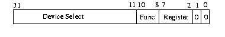
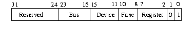
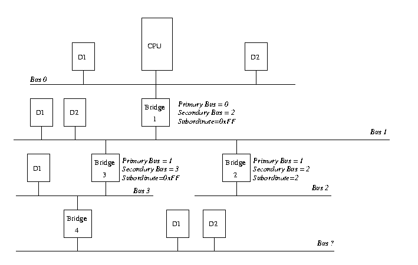
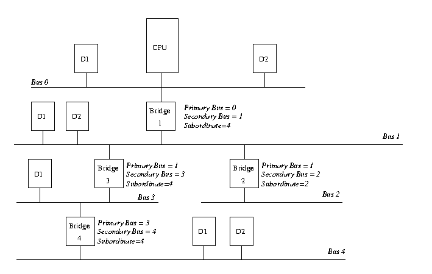

Table of Contents,
Show Frames,
No Frames

Peripheral Component Interconnect (PCI),
as its name implies is a standard that describes how to connect
the peripheral components of a system together in a structured
and controlled way.
The standard describes
the way that the system components are electrically
connected and the way that they should behave.
This chapter looks at how the Linux kernel initializes the system's PCI
buses and devices.

Figure 6.1: Example PCI Based System
Figure 6.1 is a logical diagram of an example PCI based system.
The PCI buses and PCI-PCI bridges are the glue connecting the system
components together; the CPU
is connected to PCI bus 0, the primary PCI bus as is the video device.
A special PCI device, a PCI-PCI bridge connects the primary
bus to the secondary PCI bus, PCI bus 1.
In the jargon of the PCI specification, PCI bus 1 is described as being
downstream of the PCI-PCI bridge and
PCI bus 0 is up-stream of the bridge.
Connected to the secondary PCI bus are the SCSI and ethernet
devices for the system.
Physically the bridge, secondary PCI bus and two devices
would all be contained on the same combination PCI card.
The PCI-ISA bridge in the system supports older, legacy ISA devices and the diagram
shows a super I/O controller chip, which controls the keyboard, mouse and
floppy.
1
6.1 PCI Address Spaces
The CPU and the PCI devices need to access memory that is shared
between them.
This memory is used by device drivers to control the PCI devices and
to pass information between them.
Typically the shared memory contains control and status registers for the
device.
These registers are used to control the device and to read its status.
For example, the PCI SCSI device driver would read its status register
to find out if the SCSI device was ready to write a block of information
to the SCSI disk.
Or it might write to the control register to start the device running after it
has been turned on.
The CPU's system memory could be used for this shared memory but if it were, then every time a
PCI device accessed memory, the CPU would have to stall, waiting for
the PCI device to finish.
Access to memory is generally limited to one system component at a time.
This would slow the system down.
It is also not a good idea to allow the system's peripheral devices to
access main memory in an uncontrolled way.
This would be very dangerous; a rogue device could make the system
very unstable.
Peripheral devices have their own memory spaces.
The CPU can access these spaces but access by the devices into the
system's memory is very strictly controlled using DMA (Direct Memory
Access) channels.
ISA devices have access to two address spaces, ISA I/O (Input/Output)
and ISA memory.
PCI has three; PCI I/O, PCI Memory and PCI Configuration space.
All of these address spaces are also accessible by the CPU with the
the PCI I/O and PCI Memory address spaces being used by the device
drivers and the PCI Configuration space being used by the PCI initialization
code within the Linux kernel.
The Alpha AXP processor does not have natural access to addresses spaces other than
the system address space.
It uses support chipsets to access other address spaces such as PCI Configuration
space.
It uses a sparse address mapping scheme which steals part of the large virtual
address space and maps it to the PCI address spaces.
6.2 PCI Configuration Headers
Figure 6.2: The PCI Configuration Header
Every PCI device in the system, including the PCI-PCI bridges
has a configuration data structure that is somewhere in
the PCI configuration address space.
The PCI Configuration header allows the system to identify and
control the device.
Exactly where the header is in the PCI Configuration address space
depends on where in the PCI topology that device is.
For example, a PCI video card plugged into one PCI slot
on the PC motherboard will
have its configuration header at one location and if it is
plugged into another PCI slot then its header will appear
in another location in PCI Configuration memory.
This does not matter, for wherever the PCI devices and bridges
are the system will find and configure them using the status
and configuration registers in their configuration headers.
Typically, systems are designed so that every PCI slot has it's
PCI Configuration Header in an offset that is related to
its slot on the board.
So, for example, the first slot on the board might have its
PCI Configuration at offset 0 and the second slot at offset
256 (all headers are the same length, 256 bytes) and so on.
A system specific hardware mechanism is defined so that the PCI
configuration code can attempt to examine all possible PCI Configuration
Headers for a given PCI bus and know which devices are present
and which devices are absent simply by trying to read one of
the fields in the header (usually the Vendor Identification
field) and getting some sort of error.
The describes
one possible error message as returning 0xFFFFFFFF when attempting to
read the Vendor Identification and Device Identification
fields for an empty PCI slot.
Figure 6.2 shows the layout
of the 256 byte PCI configuration header.
It contains the following fields:
- Vendor Identification
- A unique number
describing the originator
of the PCI device. Digital's PCI Vendor Identification is
0x1011 and Intel's is 0x8086.
- Device Identification
- A unique number describing
the device itself. For example, Digital's 21141 fast
ethernet device has a device identification of 0x0009.
- Status
- This field gives the status of the
device with the meaning of the bits of this field set
by the standard. .
- Command
- By writing to this field the system
controls the device, for example allowing the device to access PCI I/O memory,
- Class Code
- This identifies the type of device that
this is. There are standard classes for every sort of device;
video, SCSI and so on. The class code for SCSI is 0x0100.
- Base Address Registers
- These registers are used to
determine and allocate the type, amount and location of
PCI I/O and PCI memory space that the device can use.
- Interrupt Pin
- Four of the physical pins on the PCI card carry
interrupts from the card to the PCI bus. The standard labels these as
A, B, C and D. The Interrupt Pin field describes which of these
pins this PCI device uses. Generally it is hardwired for a pariticular
device. That is, every time the system boots, the device uses the same
interrupt pin. This information allows the interrupt handling subsystem
to manage interrupts from this device,
- Interrupt Line
-
The Interrupt Line field of the device's PCI Configuration header
is used to pass an interrupt handle between the PCI initialisation code,
the device's driver and Linux's interrupt handling subsystem.
The number written there is meaningless to the the device driver but it
allows the interrupt handler to correctly route an interrupt from the
PCI device to the correct device driver's interrupt handling code within
the Linux operating system.
See Chapter interrupt-chapter on page
for details on how Linux handles interrupts.
6.3 PCI I/O and PCI Memory Addresses
These two address spaces are used by the devices to communicate
with their device drivers running in the Linux kernel on the CPU.
For example, the DECchip 21141 fast ethernet device maps its
internal registers into PCI I/O space.
Its Linux device driver then reads and writes those registers to control
the device.
Video drivers typically use large amounts of PCI memory space
to contain video information.
Until the PCI system has been set up and the device's access to
these address spaces has been turned on using the Command
field in the PCI Configuration header, nothing can access them.
It should be noted that only the PCI configuration code reads
and writes PCI configuration addresses; the Linux device drivers
only read and write PCI I/O and PCI memory addresses.
6.4 PCI-ISA Bridges
These bridges support legacy ISA devices by translating PCI I/O and PCI Memory
space accesses into ISA I/O and ISA Memory accesses.
A lot of systems now sold contain several ISA bus slots and several PCI bus slots.
Over time the need for this backwards compatibility will dwindle and PCI only
systems will be sold.
Where in the ISA address spaces (I/O and Memory) the ISA devices of the
system have their registers was fixed in the dim mists of time by the
early Intel 8080 based PCs.
Even a $5000 Alpha AXP based computer systems will have its ISA floppy controller
at the same place in ISA I/O space as the first IBM PC.
The PCI specification copes with this by reserving the lower regions
of the PCI I/O and PCI Memory address spaces for use by the ISA peripherals
in the system and using a single PCI-ISA bridge to translate any PCI memory
accesses to those regions into ISA accesses.
6.5 PCI-PCI Bridges
PCI-PCI bridges are special PCI devices that glue the PCI buses of the system together.
Simple systems have a single PCI bus but there is an
electrical limit on the number of PCI devices that a single
PCI bus can support.
Using PCI-PCI bridges to add more PCI buses allows the system
to support many more PCI devices.
This is particularly important for a high performance server.
Of course, Linux fully supports the use of PCI-PCI bridges.
6.5.1 PCI-PCI Bridges: PCI I/O and PCI Memory Windows
PCI-PCI bridges only pass a subset of PCI I/O and PCI memory read and
write requests downstream.
For example, in Figure 6.1 on
page pageref, the PCI-PCI bridge will only
pass read and write addresses from PCI bus 0 to PCI bus 1
if they are for PCI I/O or PCI memory addresses owned by either
the SCSI or ethernet device; all other PCI I/O and memory addresses are ignored.
This filtering stops addresses propogating needlessly throughout the system.
To do this, the PCI-PCI bridges must be programmed with a base and limit for
PCI I/O and PCI Memory space access that they have to pass
from their primary bus onto their secondary bus.
Once the PCI-PCI Bridges in a system have been configured
then so long as the Linux device drivers only access PCI I/O and PCI
Memory space via these windows, the PCI-PCI Bridges are invisible.
This is an important feature that makes life easier for
Linux PCI device driver writers.
However, it also makes PCI-PCI bridges somewhat tricky for
Linux to configure as we shall see later on.
6.5.2 PCI-PCI Bridges: PCI Configuration Cycles and PCI Bus Numbering

Figure 6.3: Type 0 PCI Configuration Cycle

Figure 6.4: Type 1 PCI Configuration Cycle
So that the CPU's PCI initialization code can address devices that
are not on the main PCI bus, there has to be a mechanism
that allows bridges to decide whether or not to pass
Configuration cycles from their primary interface to
their secondary interface.
A cycle is just an address as it appears on the PCI bus.
The PCI specification defines two formats for the PCI Configuration addresses; Type 0 and Type 1; these
are shown in Figure 6.3 and Figure 6.4
respectively.
Type 0 PCI Configuration cycles do not contain a bus number and these are
interpretted by all devices as being for PCI configuration addresses
on this PCI bus.
Bits 31:11 of the Type 0 configuraration cycles are treated as the
device select field.
One way to design a system is to have each bit select a different device.
In this case bit 11 would select the PCI device in slot 0, bit 12 would
select the PCI device in slot 1 and so on.
Another way is to write the device's slot number directly into bits 31:11.
Which mechanism is used in a system depends on the system's PCI memory
controller.
Type 1 PCI Configuration cycles contain a PCI bus number and this type
of configuration cycle is ignored by all PCI devices except the PCI-PCI
bridges.
All of the PCI-PCI Bridges seeing Type 1 configuration cycles may choose
to pass them to the PCI buses downstream of themselves.
Whether the PCI-PCI Bridge ignores the Type 1 configuration cycle or
passes it onto the downstream PCI bus depends on how the PCI-PCI Bridge has been configured.
Every PCI-PCI bridge has a primary bus interface number
and a secondary bus interface number.
The primary bus interface being the one nearest the CPU and the secondary
bus interface being the one furthest away.
Each PCI-PCI Bridge also has a subordinate bus number and this is
the maximum bus number of all the PCI buses that are bridged beyond the secondary bus
interface.
Or to put it another way, the subordinate bus number is
the highest numbered PCI bus downstream of the PCI-PCI bridge.
When the PCI-PCI bridge sees a Type 1 PCI configuration cycle it does one of the
following things:
- Ignore it if the bus number specified is not in
between the bridge's secondary bus number and
subordinate bus number (inclusive),
- Convert it to a Type 0 configuration command if
the bus number specified matches the secondary bus
number of the bridge,
- Pass it onto the secondary bus interface unchanged
if the bus number specified is greater than the
secondary bus number and less than or equal to the
subordinate bus number.
So, if we want to address Device 1 on bus 3 of the
topology Figure pci-pci-config-eg-4 on page
we must generate a Type 1 Configuration command from the CPU.
Bridge1 passes this unchanged onto Bus 1. Bridge2 ignores it but Bridge3
converts it into a Type 0 Configuration command and sends
it out on Bus 3 where Device 1 responds to it.
It is up to each individual operating system to allocate bus
numbers during PCI configuration but whatever the
numbering scheme used the following statement must be true for
all of the PCI-PCI bridges in the system:
``All PCI buses located behind a PCI-PCI bridge must
reside between the seondary bus number and the
subordinate bus number (inclusive).''
If this rule is broken then the PCI-PCI Bridges will not pass and
translate Type 1 PCI configuration cycles correctly and the system will
fail to find and initialise the PCI devices in the system.
To achieve this numbering scheme, Linux configures these special devices
in a particular order.
Section pci-pci-bus-numbering on page
describes Linux's PCI bridge and bus numbering scheme in detail together
with a worked example.
6.6 Linux PCI Initialization
The PCI initialisation code in Linux is broken into three logical parts:
- PCI Device Driver
- This pseudo-device driver searches the
PCI system starting at Bus 0 and locates all PCI
devices and bridges in the system.
It builds a linked list of data structures describing the
topology of the system.
Additionally, it numbers all of the bridges that it finds.
- PCI BIOS
- This software layer provides the services
described in bib-pci-bios-specification. Even though Alpha AXP does
not have BIOS services, there is equivalent code in the Linux
kernel providing the same functions,
- PCI Fixup
- System specific fixup code tidies up the
system specific loose ends of PCI initialization.
6.6.1 The Linux Kernel PCI Data Structures
Figure 6.5: Linux Kernel PCI Data Structures
As the Linux kernel initialises the PCI system it builds data structures mirroring
the real PCI topology of the system.
Figure 6.5 shows the relationships of the data structures
that it would build for the example PCI system in Figure 6.1
on page pageref.
Each PCI device (including the PCI-PCI Bridges) is described by a pci_dev data
structure.
Each PCI bus is described by a pci_bus data structure.
The result is a tree structure of PCI buses each of which has a number of
child PCI devices attached to it.
As a PCI bus can only be reached using a PCI-PCI Bridge (except the primary PCI bus, bus 0),
each pci_bus contains a pointer to the PCI device (the PCI-PCI Bridge) that it is
accessed through.
That PCI device is a child of the the PCI Bus's parent PCI bus.
Not shown in the Figure 6.5 is a pointer to
all of the PCI devices in the system, pci_devices.
All of the PCI devices in the system have their pci_dev data structures queued onto
this queue..
This queue is used by the Linux kernel to quickly find all of the PCI devices in the
system.
6.6.2 The PCI Device Driver
The PCI device driver is not really a device driver at all but
a function of the operating system called at system initialisation time.
The PCI initialisation code must scan all of the PCI buses
in the system looking for all PCI devices in the system (including
PCI-PCI bridge devices).
It uses the PCI BIOS code to find out if every possible slot in the
current PCI bus that it is scanning is occupied.
If the PCI slot is occupied, it builds a pci_dev data structure
describing the device and links into the list of
known PCI devices (pointed at by pci_devices).
The PCI initialisation code starts by scanning PCI Bus 0.
It tries to read the Vendor Identification and Device Identification
fields for every possible PCI device in every possible PCI slot.
When it finds an occupied slot it builds a pci_dev data structure
describing the device.
All of the pci_dev data structures built by the PCI initialisation
code (including all of the PCI-PCI Bridges) are linked into a singly linked
list; pci_devices.
If the PCI device that was found was a PCI-PCI bridge then a pci_bus
data structure is built and linked into the tree of pci_bus and
pci_dev data structures pointed at by pci_root.
The PCI initialisation code can tell if the PCI device is a PCI-PCI Bridge
because it has a class code of 0x060400.
The Linux kernel then configures the PCI bus on the other (downstream) side
of the PCI-PCI Bridge that it has just found.
If more PCI-PCI Bridges are found then these are also configured.
This process is known as a depthwise algorithm; the system's PCI
topology is fully mapped depthwise before searching breadthwise.
Looking at Figure 6.1 on page pageref,
Linux would configure PCI Bus 1 with its Ethernet and SCSI device before it
configured the video device on PCI Bus 0.
As Linux searches for downstream PCI buses it must
also configure the intervening PCI-PCI bridges' secondary
and subordinate bus numbers.
This is described in detail in Section pci-pci-bus-numbering below.
Configuring PCI-PCI Bridges - Assigning PCI Bus Numbers

Figure 6.6: Configuring a PCI System: Part 1
For PCI-PCI bridges to pass PCI I/O, PCI Memory or PCI
Configuration address space reads and writes across them,
they need to know the following:
- Primary Bus Number
- The bus number immediately
upstream of the PCI-PCI Bridge,
- Secondary Bus Number
- The bus number immediately
downstream of the PCI-PCI Bridge,
- Subordinate Bus Number
- The highest bus number of all
of the buses that can be reached downstream of the bridge.
- PCI I/O and PCI Memory Windows
- The window base and size for PCI I/O address space
and PCI Memory address space for all addresses downstream of the PCI-PCI Bridge.
The problem is that at the time when you wish to
configure any given PCI-PCI bridge you do not know the
subordinate bus number for that bridge. You do not know
if there are further PCI-PCI bridges downstream and if
you did, you do not know what numbers will be assigned to
them.
The answer is to use a depthwise recursive algorithm
and scan each bus for any PCI-PCI bridges assigning them
numbers as they are found.
As each PCI-PCI bridge is found and its secondary bus numbered, assign it a
temporary subordinate number of 0xFF and scan and assign
numbers to all PCI-PCI bridges downstream of it.
This all seems complicated but the worked example below makes this process
clearer.
- PCI-PCI Bridge Numbering: Step 1
-
Taking the topology in Figure 6.6, the first bridge
the scan would find is Bridge1.
The PCI bus downstream of Bridge1 would be numbered as 1 and Bridge1
assigned a secondary bus number of 1 and a temporary subordinate bus number of 0xFF.
This means that all Type 1 PCI Configuration addresses specifying a PCI bus number
of 1 or higher would be passed across Bridge1 and onto PCI Bus 1.
They would be translated into Type 0 Configuration cycles if they have a bus number
of 1 but left untranslated for all other bus numbers.
This is exactly what the Linux PCI initialisation code needs to do in order
to go and scan PCI Bus 1.

Figure 6.7: Configuring a PCI System: Part 2
- PCI-PCI Bridge Numbering: Step 2
-
Linux uses a depthwise algorithm and so the initialisation code goes
on to scan PCI Bus 1.
Here it finds PCI-PCI Bridge2.
There are no further PCI-PCI bridges beyond PCI-PCI Bridge2,
so it is assigned a subordinate bus number of 2 which
matches the number assigned to its secondary interface.
Figure 6.7 shows how the buses and
PCI-PCI bridges are numbered at this point.

Figure 6.8: Configuring a PCI System: Part 3
- PCI-PCI Bridge Numbering: Step 3
-
The PCI initialisation code returns to scanning PCI Bus 1 and finds another
PCI-PCI bridge, Bridge3.
It is assigned 1 as its primary bus interface number, 3 as its secondary bus
interface number and 0xFF as its subordinate bus number.
Figure 6.8 on
page pageref shows how the system is configured now.
Type 1 PCI configuration cycles with a bus number of 1, 2 or 3 wil be correctly
delivered to the appropriate PCI buses.

Figure 6.9: Configuring a PCI System: Part 4
- PCI-PCI Bridge Numbering: Step 4
-
Linux starts scanning PCI Bus 3, downstream of PCI-PCI Bridge3.
PCI Bus 3 has another PCI-PCI bridge (Bridge4) on it, it is assigned 3 as its
primary bus number and 4 as its secondary bus number.
It is the last bridge on this branch and so it is assigned a subordinate bus
interface number of 4.
The initialisation code returns to PCI-PCI Bridge3 and assigns it a
subordinate bus number of 4.
Finally, the PCI initialisation code can assign 4 as the
subordinate bus number for PCI-PCI Bridge1.
Figure 6.9 on page pageref
shows the final bus numbers.
6.6.3 PCI BIOS Functions
The PCI BIOS functions are a series of standard routines which are common
across all platforms.
For example, they are the same for both Intel and Alpha AXP based systems.
They allow the CPU controlled access to all of the PCI address spaces.
Only Linux kernel code and device drivers may use them.
The PCI fixup code for Alpha AXP does rather more than that for Intel (which
basically does nothing).
For Intel based systems the system BIOS, which ran at boot time, has already
fully configured the PCI system.
This leaves Linux with little to do other than map that configuration.
For non-Intel based systems further configuration needs to happen to:
- Allocate PCI I/O and PCI Memory space to each device,
- Configure the PCI I/O and PCI Memory address windows for each PCI-PCI bridge
in the system,
- Generate Interrupt Line values for the devices; these control interrupt
handling for the device.
The next subsections describe how that code works.
Finding Out How Much PCI I/O and PCI Memory Space a
Device Needs
Each PCI device found is queried to find out how much PCI
I/O and PCI Memory address space it requires.
To do
this, each Base Address Register has all 1's written to
it and then read.
The device will return 0's in the
don't-care address bits, effectively specifying the
address space required.

Figure 6.10: PCI Configuration Header: Base Address Registers
There are two basic types of Base Address Register, the
first indicates within which address space the devices
registers must reside; either PCI I/O or PCI Memory
space. This is indicated by Bit 0 of the register.
Figure 6.10 shows the two forms of the Base Address Register for
PCI Memory and for PCI I/O.
To find out just how much of each address space a given
Base Address Register is requesting, you write all 1s
into the register and then read it back. The device
will specify zeros in the don't care address bits,
effectively specifying the address space required.
This design implies that all address spaces used are a power
of two and are naturally aligned.
For example when you initialize the DECChip 21142 PCI Fast Ethernet
device, it tells you that it needs 0x100 bytes of
space of either PCI I/O or PCI Memory. The
initialization code allocates it space. The moment that
it allocates space, the 21142's control and status registers
can be seen at those addresses.
Allocating PCI I/O and PCI Memory to PCI-PCI Bridges and
Devices
Like all memory the PCI I/O and PCI memory spaces are finite, and to some
extent scarce.
The PCI Fixup code for non-Intel systems (and the BIOS code for Intel
systems) has to allocate each device the amount of memory that it is
requesting in an efficient manner.
Both PCI I/O and PCI Memory must be allocated to a device in a naturally
aligned way. For example, if a device asks for 0xB0 of PCI I/O space
then it must be aligned on an address that is a multiple of 0xB0.
In addition to this, the PCI I/O and PCI Memory bases for
any given bridge must be aligned on 4K and on 1Mbyte
boundaries respectively.
Given that the address spaces
for downstream devices must lie within all of the
upstream PCI-PCI Bridge's memory ranges for any given
device, it is a somewhat difficult problem to allocate
space efficiently.
The algorithm that Linux uses relies on each device described
by the bus/device tree built by the PCI Device Driver being
allocated address space in ascending PCI I/O memory order.
Again a recursive algorithm is used to walk the pci_bus and pci_dev
data structures built by the PCI initialisation code.
Starting at the root PCI bus (pointed at by pci_root) the BIOS fixup
code:
- Aligns the current global PCI I/O and Memory bases on 4K
and 1 Mbyte boundaries respectively,
- For every device on the current bus (in ascending PCI I/O
memory needs),
- allocates it space in PCI I/O and/or PCI Memory,
- moves on the global PCI I/O and Memory bases by the
appropriate amounts,
- enables the device's use of PCI I/O and PCI Memory,
- Allocates space recursively to all of the buses
downstream of the current bus. Note that this will
change the global PCI I/O and Memory bases,
- Aligns the current global PCI I/O and Memory bases on 4K
and 1 Mbyte boundaries respectively and in doing so
figure out the size and base of PCI I/O and PCI Memory
windows required by the current PCI-PCI bridge,
- Programs the PCI-PCI bridge that links to this bus with
its PCI I/O and PCI Memory bases and limits,
- Turns on bridging of PCI I/O and PCI Memory accesses in
the PCI-PCI Bridge. This means that if any PCI I/O or PCI Memory
addresses seen on the Bridge's primary PCI bus that are within
its PCI I/O and PCI Memory address windows will be bridged onto
its secondary PCI bus.
Taking the PCI system in Figure 6.1 on
page pageref as our example the
PCI Fixup code would set up the system in the following way:
- Align the PCI bases
- PCI I/O is 0x4000 and
PCI Memory is 0x100000. This allows the PCI-ISA bridges
to translate all addresses below these into ISA address cycles,
- The Video Device
- This is asking for
0x200000 of PCI Memory and so we allocate it that
amount starting at the current PCI Memory base of
0x200000 as it has to be naturally aligned to
the size requested.
The PCI Memory base is moved to
0x400000 and the PCI I/O base remains at 0x4000.
- The PCI-PCI Bridge
- We now cross the PCI-PCI Bridge and
allocate PCI memory there, note that we do not need to
align the bases as they are already correctly aligned:
- The Ethernet Device
- This is asking for 0xB0 bytes
of both PCI I/O and PCI Memory space. It gets allocated PCI
I/O at 0x4000 and PCI Memory at 0x400000.
The PCI Memory base is moved to
0x4000B0 and the PCI I/O base to 0x40B0.
- The SCSI Device
- This is asking for 0x1000 PCI Memory
and so it is allocated it at 0x401000 after it has been
naturally aligned. The PCI I/O base is still 0x40B0 and
the PCI Memory base has been moved to 0x402000.
- The PCI-PCI Bridge's PCI I/O and Memory Windows
- We now return to
the bridge and set its PCI I/O window at between 0x4000 and 0x40B0 and
it's PCI Memory window at between 0x400000 and 0x402000.
This means that the PCI-PCI Bridge will ignore the PCI Memory accesses for
the video device and pass them on if they are for the ethernet or SCSI
devices.
Footnotes:
1 For example?
File translated from TEX by TTH, version 1.0.
Top of Chapter,
Table of Contents,
Show Frames,
No Frames
© 1996-1999 David A Rusling copyright notice.